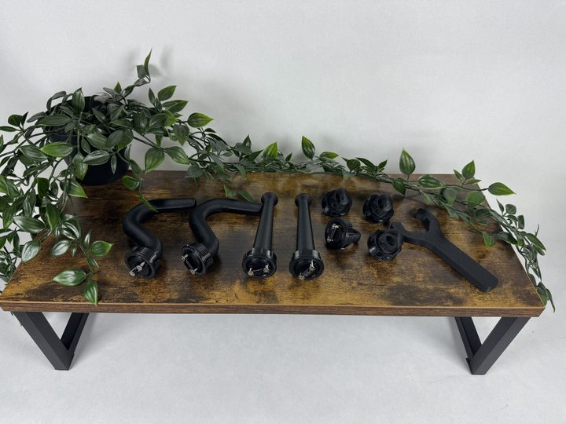
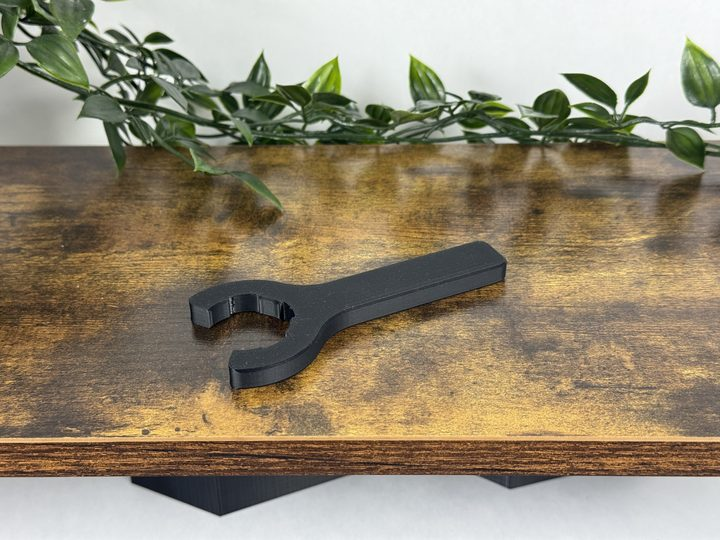
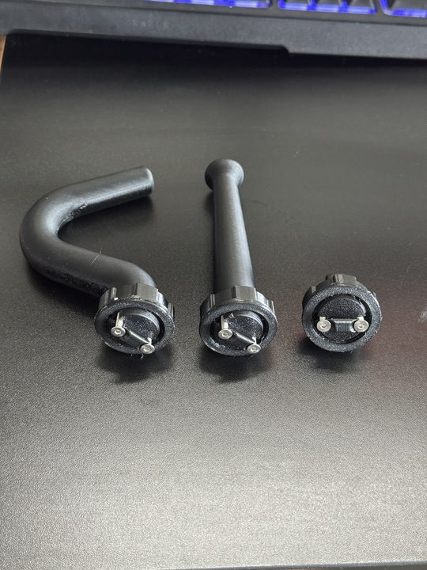
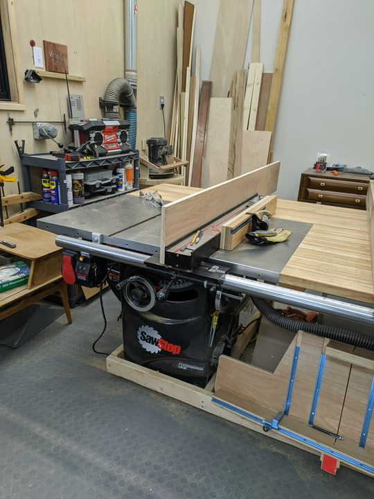
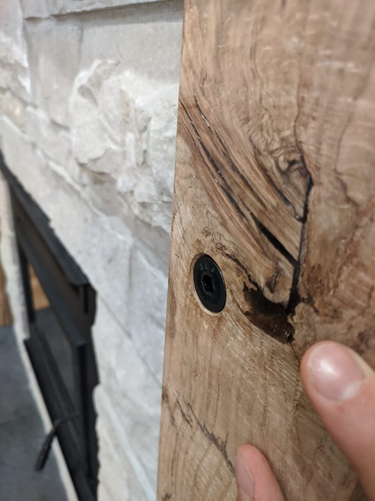
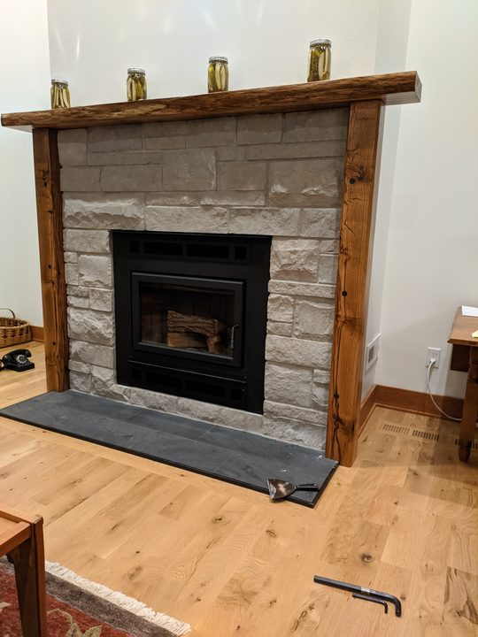

2019 – 2026
Small Designs, Woodworking & Published Models
Everyday engineering: a magnetic-hinge laptop stand, a guided knife sharpener, a replacement headset clasp users rate 5 stars, camper keder-rail accessories, a fireplace surround, a SkillsUSA car and more.
- Product design
- FDM
- Woodworking
- Printables
- Thingiverse
- CAD timelapses

Laptop stand (2022)
A wood laptop stand with printed brackets and magnetic hinges.

Guided knife sharpener (2021)
A guided sharpener that keeps the stone at a consistent angle to the blade. Published on Thingiverse and Printables.


HyperX Cloud headset clasp (2025)
The plastic buckle on HyperX Cloud 2 and Cloud Alpha headsets often breaks. My replacement is my most-downloaded model on Printables.


Keder rail attachments for campers (2026)
A set of printed hooks, pegs and stops that attach to the keder (awning) rail on campers, plus a matching tool. Designed as a product line and not yet listed for sale.





Fireplace surround and mantel (2021)
A fireplace surround and mantel I built: stone veneer framed by timber posts and a mantel milled in the shop.




SkillsUSA rubber-band car (2025)
CAD timelapses, cable chains and a camera gimbal
Parametric cable chains in several sizes, used on my printers and published on Printables, plus a carbon-rod camera gimbal design.